View code
knitr::opts_chunk$set(message = FALSE, warning = FALSE)Combined lecture notes, 5.1-5.3
knitr::opts_chunk$set(message = FALSE, warning = FALSE)categorical
mainly formed by selecting differet hues
hues assigned to each group must be distinct and ideally have different lightnesses
groups don’t have an intrinsic order
limit to no more than 7 hues
sequential scales
colors assigned to data values in a continuum, based on lightness, hue, or both
lower values typically associated with lighter colors & higher values associated with darker colors
can use a single hue or two hues
diverging scales
combination of two sequential palettes with a shared endpoint at the central value
central value is assigned a light color (light gray is best)
use a distinctive hue for each of the component palettes
Example
# store categorical color plot
cat_color_plot <- ggplot(penguins, aes(x = bill_length_mm, y = bill_depth_mm, color = species, shape = species)) +
geom_point(size = 4, alpha = 0.8)
cat_color_plot 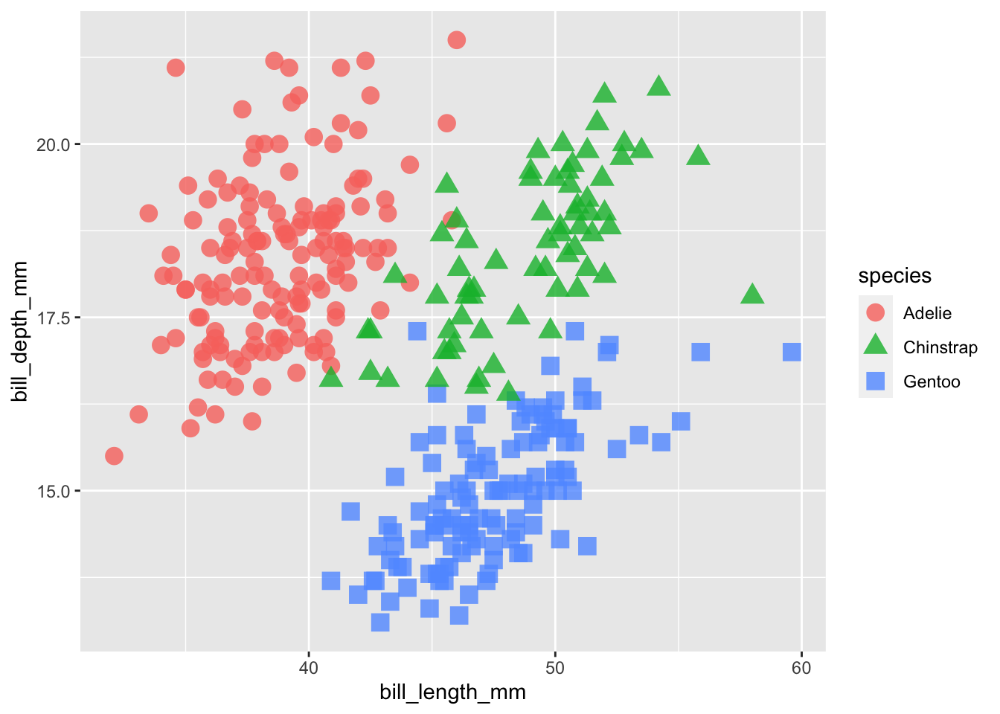
# store continuous color scale plot
cont_color_plot <- ggplot(penguins, aes(x = bill_length_mm, y = bill_depth_mm, color = body_mass_g)) +
geom_point(size = 4, alpha = 0.8)
cont_color_plot 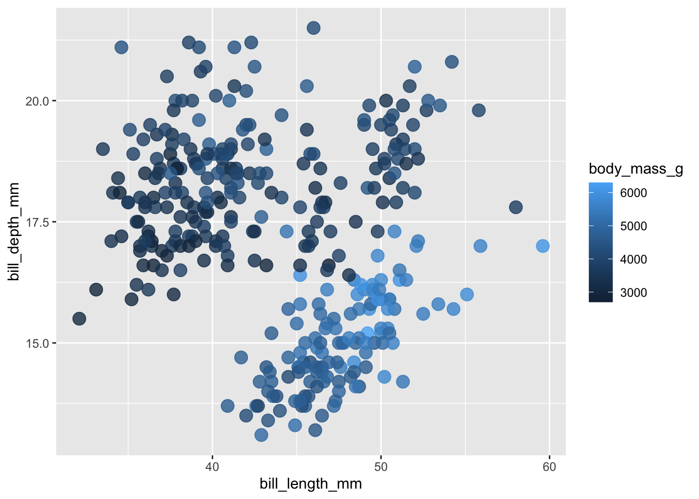
Rainbow color maps
short falls
horrible for printing (gray scale)
not color-blind friendly (looks like two colors)
no natural order, no color is inherently higher or lower
alternatives, some attempts to remedy the problem
view slide 13/63 for improved colormaps
viridis package
offers continuous and binned color scales
can tell difference in lightness even in gray scale
more uniform than standard rainbow color scales
Example: applying viridis color schemes
# add standard viridis color scale to continuous variable
cat_color_plot +
scale_color_viridis_d(option = "viridis")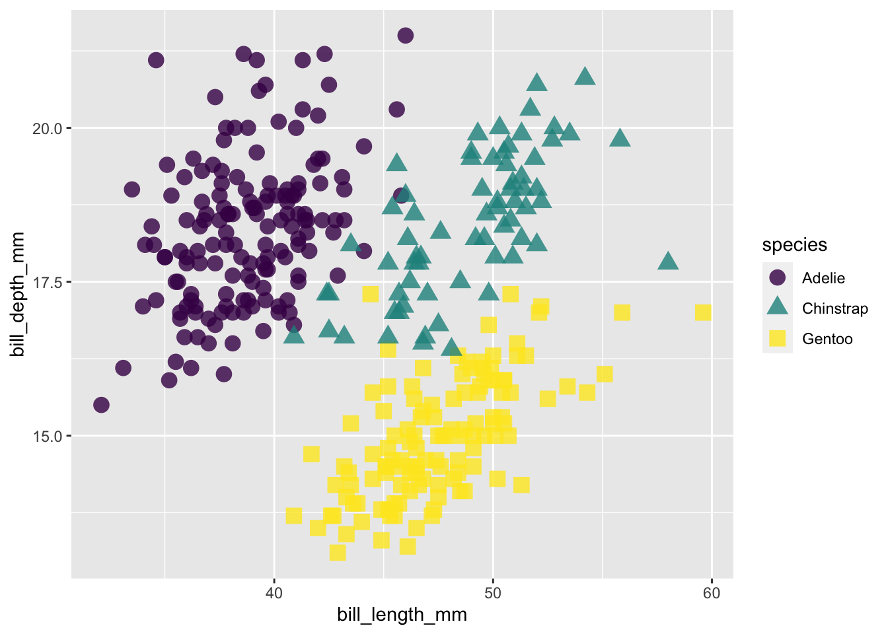
# select continous scale from viridis package
cont_color_plot +
scale_color_viridis_c(option = "magma")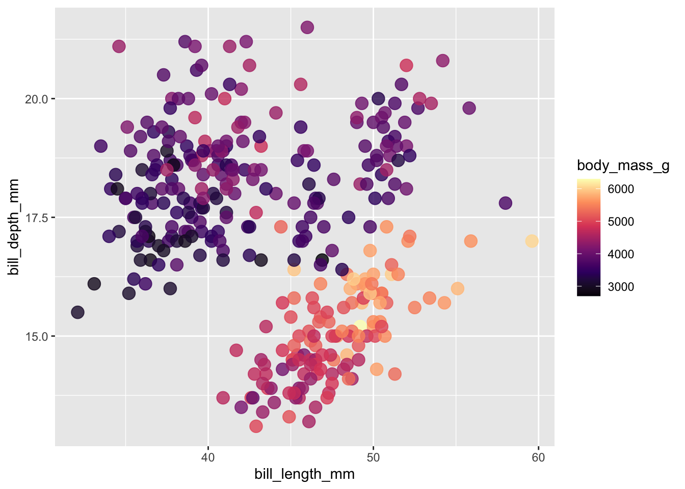
can also use RColorBrewer
not all color by friendly, but they can be filtered
Example: applying RColorBrewer color schemes
# apply categorical color scheme
cat_color_plot +
scale_color_brewer(palette = "Dark2") 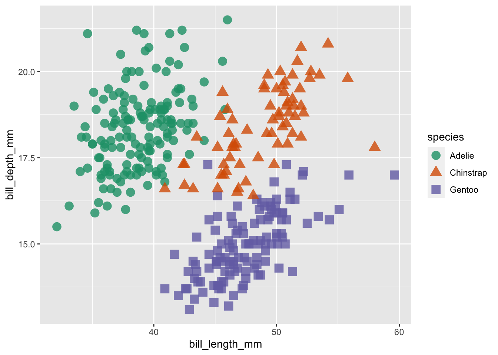
# apply continuous color scheme
cont_color_plot +
scale_color_distiller(palette = "BuPu")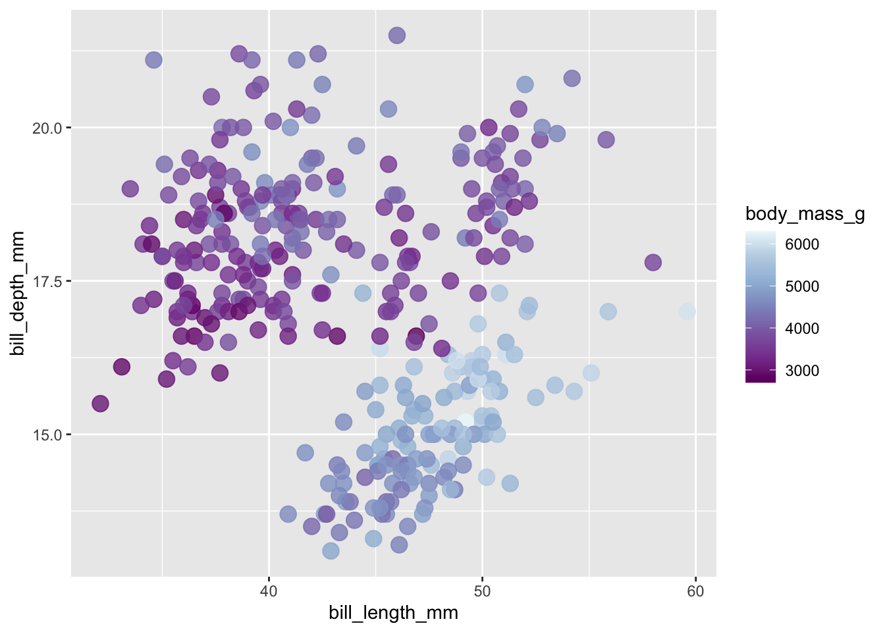
# classed versions of continuous color scales
cont_color_plot +
scale_color_fermenter(palette = "YlGnBu")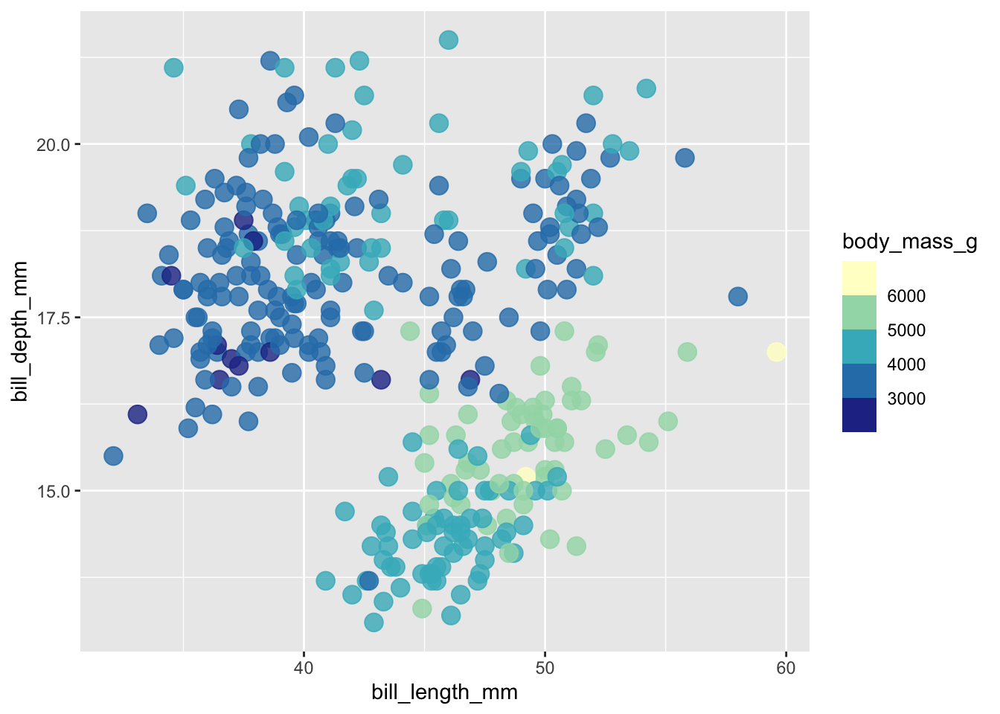
# plot bill length vs. depth
ggplot(penguins, aes(x = bill_length_mm, y = bill_depth_mm,
fill = body_mass_g)) +
geom_point(shape = 21, size = 4, alpha = 0.8) +
scale_fill_distiller(palette = "BuPu")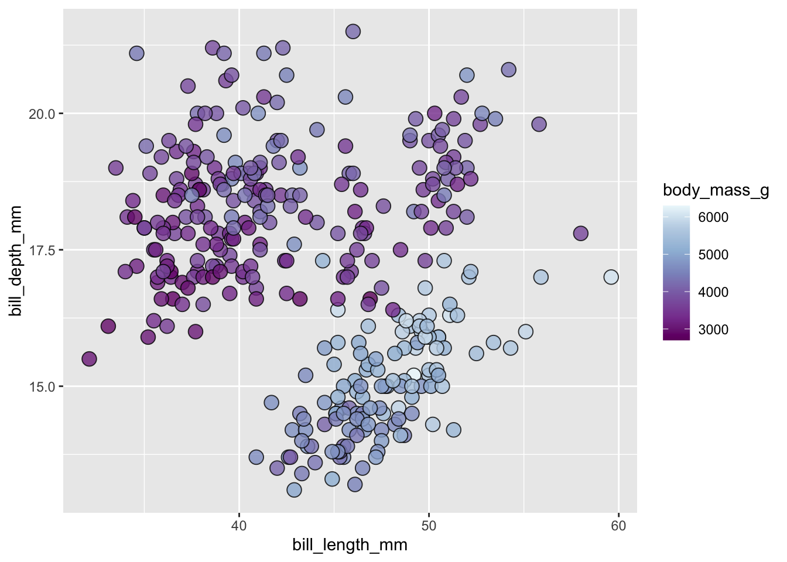
{paletteer} packageinterface for accessing new-comprehensive list of color palettes
can generate a list of HEX codes
can apply a palette directly to ggplot
using scale_*paletteer*()
# use paletteer for categorical plot
cat_color_plot +
paletteer::scale_color_paletteer_d("calecopal::superbloom3")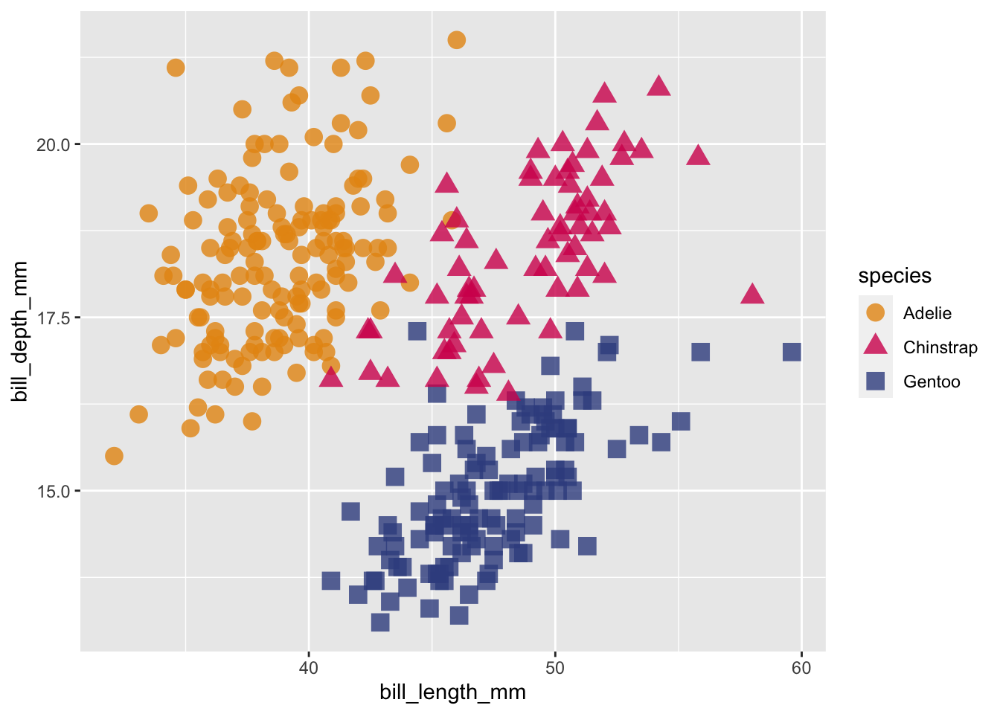
ggplot# create custom palette
my_palette <- c("#32DE8A", "#E36414", "#0F4C5C")
# apply to categorical plot
cat_color_plot +
scale_color_manual(values = my_palette)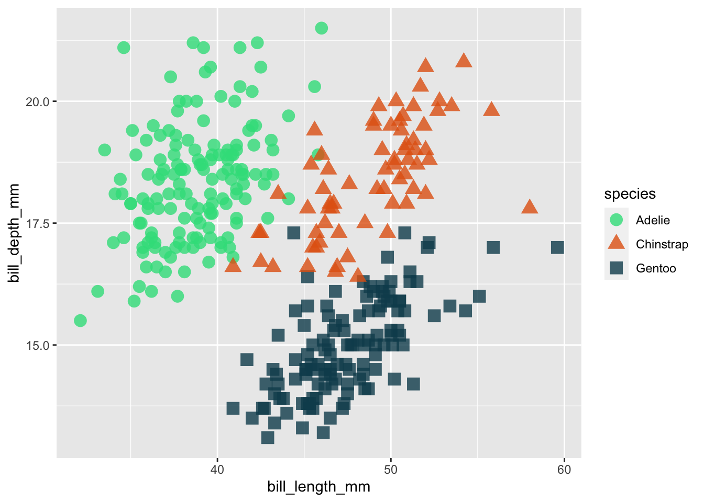
# create a named color palette (associate spp and color)
my_palette_named <- c("Adelie" = "#32DE8A","Chinstrap" = "#E36414", "Gentoo" = "#0F4C5C")
# now if a group is removed, the spp color remains the same
penguins %>%
filter(species != "Chinstrap") %>%
ggplot(aes(x = bill_length_mm, y = bill_depth_mm, color = species)) +
geom_point(size = 4, alpha = 0.8) +
scale_color_manual(values = my_palette_named)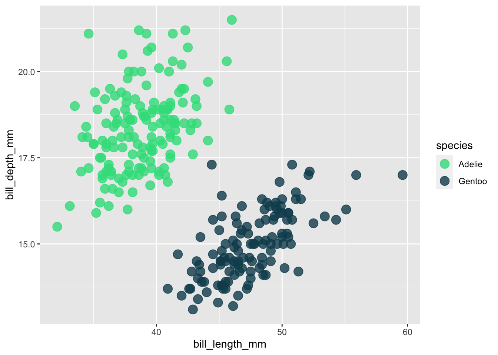
penguins %>%
mutate(
my_color = case_when(
bill_length_mm <40 ~ "#D7263D",
between(bill_length_mm, 40,50) ~ "#E4BB97",
bill_length_mm > 50 ~ "#386150") # END case-when
) %>%
ggplot(aes(x = bill_length_mm, y = bill_depth_mm, color = my_color)) +
geom_point(size = 4, alpha = 0.8) +
scale_color_identity()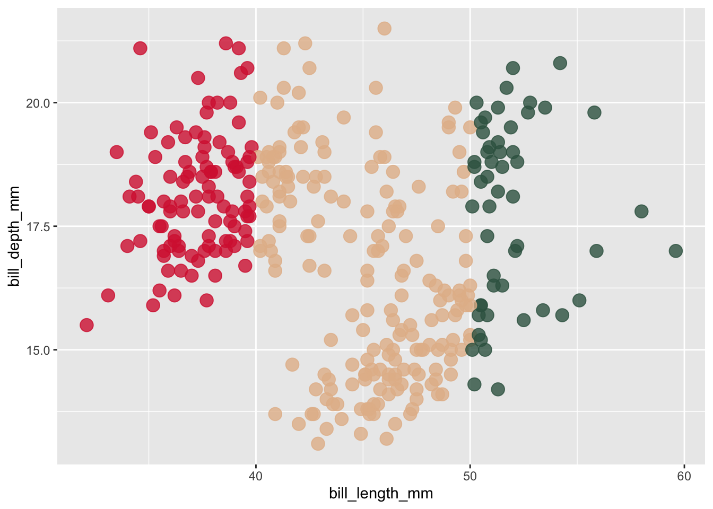
penguins %>%
mutate(
my_color = case_when(
body_mass_g > 6000 ~ "#D7263D",
TRUE ~ "gray50"
)
) %>%
ggplot(aes(x = bill_length_mm, y = bill_depth_mm, color = my_color)) +
geom_point(size = 4, alpha = 0.8) +
scale_color_identity(guide = "legend",
name = "Body mass (g)",
labels = c(">6000", "<= 6000"))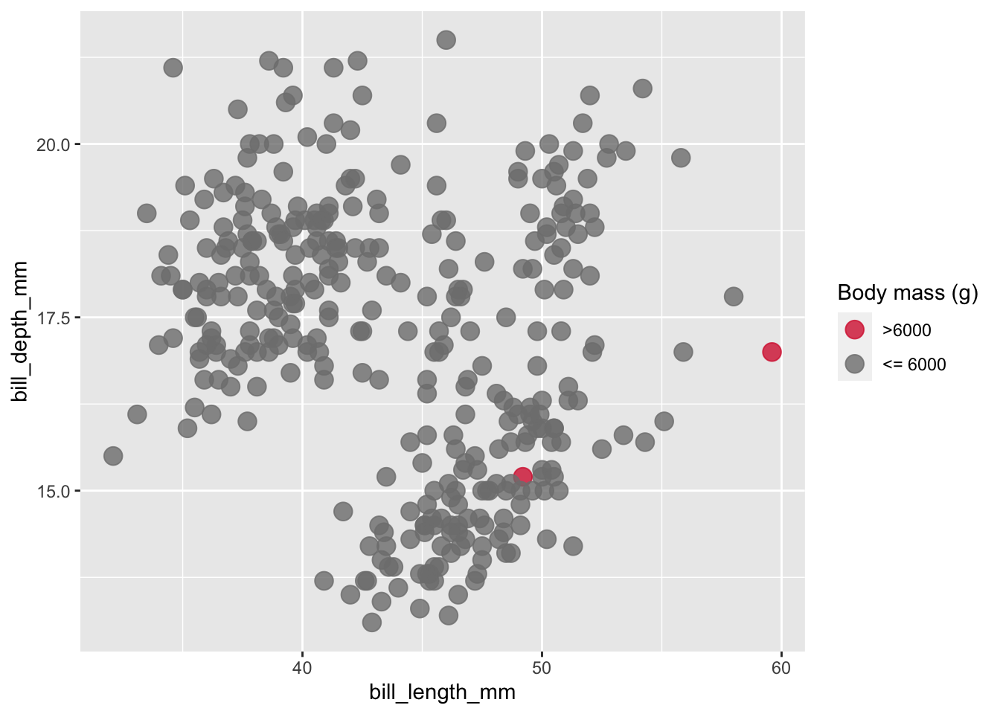
choropleths are maps that display the spatial distribution of a variable across divided geohgraphical regions, where the variable is encoded by color
Data wrangling
#.........................get shape data.........................
county_geo <- tigris::counties(class = "sf", cb = TRUE) |> # cb = TRUE to use cartographic boundary files
# shift US to fit AK, HI, PR (we'll be filtering these out though) and transform CRS to USA Contiguous Albers Equal Area Conic (ESRI:102003) ----
shift_geometry()
#....................import precipitation data...................
precip_data <- read_csv(here::here("week5", "data", "county-jan19-dec23-precip.csv"), skip = 4)
##~~~~~~~~~~~~~~~~~~~~~~~~~~~~
## ~ wrangle geometries ----
##~~~~~~~~~~~~~~~~~~~~~~~~~~~~
county_geo_wrangled <- county_geo |>
# clean up col names ----
janitor::clean_names() |>
# rename county & state cols ----
rename(county = namelsad, state = state_name) |>
# remove states / territories that we don't have precip data for ----
filter(!state %in% c("Alaska", "Hawaii", "District of Columbia",
"United States Virgin Islands", "Puerto Rico", "American Samoa",
"Commonwealth of the Northern Mariana Islands", "Guam")) |>
# capitalize "city" (VA) ----
mutate(county = str_replace(string = county, pattern = " city", replacement = " City"))
##~~~~~~~~~~~~~~~~~~~~~~~~~~~~~~~~~~~~
## ~ wrangle precipitation data ----
##~~~~~~~~~~~~~~~~~~~~~~~~~~~~~~~~~~~~
precip_wrangled <- precip_data |>
# clean up col names ----
janitor::clean_names() |>
# rename county col ----
rename(county = name) |>
# filter out DC ----
filter(!county %in% c("Washington, D.C.")) |>
# update name to match that in county_geo df ----
mutate(county = str_replace(string = county, pattern = "Dona Ana County", replacement = "Doña Ana County")) |>
# coerce precip & 20th centruy avg from chr to numeric ----
mutate(value = as.numeric(value),
x1901_2000_mean = as.numeric(x1901_2000_mean)) |>
# calculate % change ----
mutate(perc_change = ((value - x1901_2000_mean)/x1901_2000_mean)*100) |>
# select, rename, reorder cols ----
select(id, state, county, mean_1901_2000 = x1901_2000_mean, precip = value, perc_change, anomaly_1901_2000_base_period)
##~~~~~~~~~~~~~~~~~~
## ~ join dfs ----
##~~~~~~~~~~~~~~~~~~
# join dfs (be sure to join precip TO sf object, not the other way around) -------
joined_precip_geom <- full_join(county_geo_wrangled, precip_wrangled) Creating a base map
# store map
base_map <- ggplot(joined_precip_geom) +
# set aesthetics in geom layer (could do it in ggplot)
geom_sf(aes(fill = perc_change),
# minimize graticules
linewidth = 0.1) +
# add labels
labs(title = "5-year precipitation compared to 20th century average",
subtitle = "January 2019 - December 2023",
caption = "Source: National Centers for Environmental Information") +
# change theme to minimize non-data ink
theme_void() +
# continue customizations,
theme(legend.position = "bottom", # change legend position
legend.title = element_blank(), # remove legend title
plot.caption = element_text(face = "italic",
margin = margin(t = 2, r = 0.5,
b = 0, l = 0,
"lines"))
)
# plot map
base_map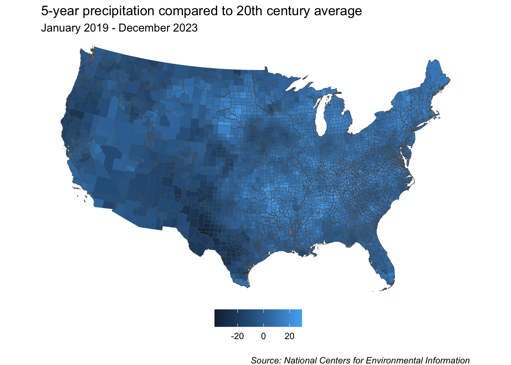